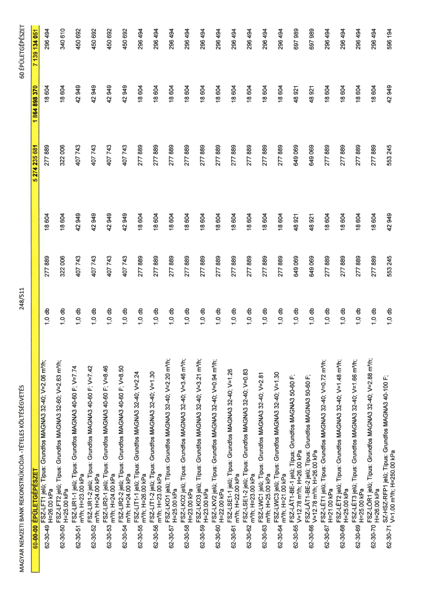

| Tétel | Menny. | Egys. | Anyag e.ár (net HUF) | Díj e.ár (net HUF) | Anyag összesen (net HUF) | Díj összesen (net HUF) | Anyag+Díj összesen (net HUF) |
|---|---|---|---|---|---|---|---|
| 62-30-49 FSZ-LFT1 jelű; Típus: Grundfos MAGNA3 32-40; V=2.06 m3/h; H=26.00 kPa | 1,0 | db | 277 889 | 18 604 | 277 889 | 18 604 | 296 494 |
| 62-30-50 FSZ-LFT2 jelű; Típus: Grundfos MAGNA3 32-60; V=2.63 m3/h; H=25.00 kPa | 1,0 | db | 322 006 | 18 604 | 322 006 | 18 604 | 340 610 |
| 62-30-51 FSZ-LIR1-1 jelű; Típus: Grundfos MAGNA3 40-60 F; V=7.74 m3/h; H=23.00 kPa | 1,0 | db | 407 743 | 42 949 | 407 743 | 42 949 | 450 692 |
| 62-30-52 FSZ-LIR1-2 jelű; Típus: Grundfos MAGNA3 40-60 F; V=7.42 m3/h; H=24.00 kPa | 1,0 | db | 407 743 | 42 949 | 407 743 | 42 949 | 450 692 |
| 62-30-53 FSZ-LIR2-1 jelű; Típus: Grundfos MAGNA3 40-60 F; V=8.46 m3/h; H=24.00 kPa | 1,0 | db | 407 743 | 42 949 | 407 743 | 42 949 | 450 692 |
| 62-30-54 FSZ-LIR2-2 jelű; Típus: Grundfos MAGNA3 40-60 F; V=8.50 m3/h; H=24.00 kPa | 1,0 | db | 407 743 | 42 949 | 407 743 | 42 949 | 450 692 |
| 62-30-55 FSZ-LIT1-1 jelű; Típus: Grundfos MAGNA3 32-40; V=2.24 m3/h; H=26.00 kPa | 1,0 | db | 277 889 | 18 604 | 277 889 | 18 604 | 296 494 |
| 62-30-56 FSZ-LIT1-2 jelű; Típus: Grundfos MAGNA3 32-40; V=1.30 m3/h; H=23.00 kPa | 1,0 | db | 277 889 | 18 604 | 277 889 | 18 604 | 296 494 |
| 62-30-57 FSZ-LKO1 jelű; Típus: Grundfos MAGNA3 32-40; V=2.20 m3/h; H=25.00 kPa | 1,0 | db | 277 889 | 18 604 | 277 889 | 18 604 | 296 494 |
| 62-30-58 FSZ-LKO2 jelű; Típus: Grundfos MAGNA3 32-40; V=3.46 m3/h; H=23.00 kPa | 1,0 | db | 277 889 | 18 604 | 277 889 | 18 604 | 296 494 |
| 62-30-59 FSZ-LKO3 jelű; Típus: Grundfos MAGNA3 32-40; V=3.21 m3/h; H=23.00 kPa | 1,0 | db | 277 889 | 18 604 | 277 889 | 18 604 | 296 494 |
| 62-30-60 FSZ-LKV2 jelű; Típus: Grundfos MAGNA3 32-40; V=0.94 m3/h; H=22.00 kPa | 1,0 | db | 277 889 | 18 604 | 277 889 | 18 604 | 296 494 |
| 62-30-61 FSZ-LSE1-1 jelű; Típus: Grundfos MAGNA3 32-40; V=1.26 m3/h; H=22.00 kPa | 1,0 | db | 277 889 | 18 604 | 277 889 | 18 604 | 296 494 |
| 62-30-62 FSZ-LSE1-2 jelű; Típus: Grundfos MAGNA3 32-40; V=0.83 m3/h; H=23.00 kPa | 1,0 | db | 277 889 | 18 604 | 277 889 | 18 604 | 296 494 |
| 62-30-63 FSZ-LWC1 jelű; Típus: Grundfos MAGNA3 32-40; V=2.81 m3/h; H=25.00 kPa | 1,0 | db | 277 889 | 18 604 | 277 889 | 18 604 | 296 494 |
| 62-30-64 FSZ-LWC3 jelű; Típus: Grundfos MAGNA3 32-40; V=1.30 m3/h; H=21.00 kPa | 1,0 | db | 277 889 | 18 604 | 277 889 | 18 604 | 296 494 |
| 62-30-65 FSZ-LÁT1-BE-1 jelű; Típus: Grundfos MAGNA3 50-60 F; V=12.78 m3/h; H=26.00 kPa | 1,0 | db | 649 069 | 48 921 | 649 069 | 48 921 | 697 989 |
| 62-30-66 FSZ-LÁT1-BE-2 jelű; Típus: Grundfos MAGNA3 50-60 F; V=12.78 m3/h; H=26.00 kPa | 1,0 | db | 649 069 | 48 921 | 649 069 | 48 921 | 697 989 |
| 62-30-67 FSZ-LÉT1 jelű; Típus: Grundfos MAGNA3 32-40; V=0.72 m3/h; H=21.00 kPa | 1,0 | db | 277 889 | 18 604 | 277 889 | 18 604 | 296 494 |
| 62-30-68 FSZ-LÉT2 jelű; Típus: Grundfos MAGNA3 32-40; V=1.48 m3/h; H=25.00 kPa | 1,0 | db | 277 889 | 18 604 | 277 889 | 18 604 | 296 494 |
| 62-30-69 FSZ-LÉT3 jelű; Típus: Grundfos MAGNA3 32-40; V=1.66 m3/h; H=25.00 kPa | 1,0 | db | 277 889 | 18 604 | 277 889 | 18 604 | 296 494 |
| 62-30-70 FSZ-LÖR1 jelű; Típus: Grundfos MAGNA3 32-40; V=2.88 m3/h; H=26.00 kPa | 1,0 | db | 277 889 | 18 604 | 277 889 | 18 604 | 296 494 |
| 62-30-71 SZ-HSZ-RFP1 jelű; Típus: Grundfos MAGNA3 40-100 F; V=1.00 m3/h; H=250.00 kPa | 1,0 | db | 553 245 | 42 949 | 553 245 | 42 949 | 596 194 |
